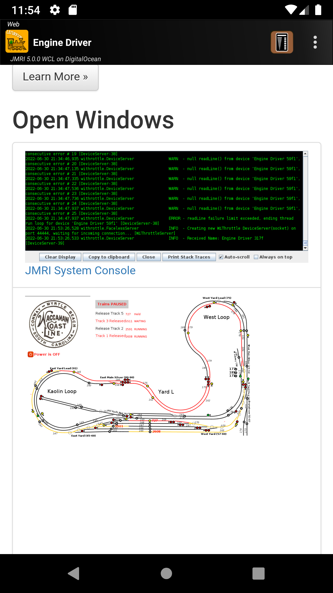

Detailed Instructions
Operating Engine Driver
Connecting
Connecting has two aspects:
Connecting to the WiFi network, which uses Android’s built in capabilities (not Engine Driver's)
Connecting Engine Driver to the WiThrottle Server or DCC-EX Server
Connecting to the WiFi network
{kind=link}
Use Android’s System Network - Wifi settings to connect to the same network as your WiThrottle Server or DCC-EX Server
With some exceptions, your device’s IP Address should be similar to the server’s IP address (the first three blocks of numbers will be identical)
For your Android device / phone, you can see its address in the Engine Driver's ‘About Screen’ (), at the top of the screen
For a JMRI server, see the WiThrottle screen for its address
For other devices, see the instructions for that device
{kind=link}
Note
Also see the WiFi issues page if you are having difficulties.
Connecting Engine Driver to the WiThrottle server
Start Engine Driver
You will be presented with the Connection ScreenOn the Connection Screen there are three ways you can select a WiThrottle Server or DCC-EX Server to connect to:
Discovered Servers List (The most common way to connect)
IP Address and Port
{kind=link}
Type in the IP address and Port of the WiThrottle Server or DCC-EX Server and press Connect.
To find your server’s IP address and Port:
For a JMRI server, see the WiThrottle screen for its address
For other devices, see the instructions for that device
If you only ever connect to one WiThrottle Server or DCC-EX Server you can effectively bypass this screen by setting the Auto-Connect to WiThrottle Server? preference.
Note
Also see Connection issues if you are having difficulties.
Discovered Servers List
{kind=link}
This is the most common way to connect. If the server you want to connect to is in the list, simply click on it and you will be taken to the Throttle Screen.
If the server does not appear in the recent list try one of the other two methods. Your server not appearing in the recent list is not necessarily a problem See Connection issues for more information.
Recent Server List
{kind=link}
If the server you want to connect to is in the list, simply click on it and you will be taken to the Throttle Screen.
Note: A server being in this list does not necessarily mean that you will be able to connect it now. It just means that you have successfully connected to it in the past.
There is also a ‘demo’ server at jmri.mstevetodd.com, port 44444 in this list that you can connect to for testing. (If your device/phone has an internet connection.)
Disconnections
Engine Driver and/or the Android device can occasionally lose the connection even after it successfully connected. There can be a lot of causes. If ED does lose connection it will buzz, vibrate and take you to Reconnecting Screen. It will repeatedly and indefinitely attempt to reconnect.
If JMRI does not receive any feedback from your device/phone within a configured period, JMRI will stop all the locos you have selected on you device/phone.
Note
See WiFi issues more information for possible causes/solution.
See Feedback on Disconnect preference on the Preferences page to disable the audible and haptic warnings.
Turn Track Power On
Some DCC Command Stations need to be instructed to turn the Track Power on before you can use them. This is not required by all Command Stations so check your manufacturer’s instructions.
There are two ways to turn the Track Power on/off:
Power Screen - accessed from the menu
Power Action Bar button - if enabled in the preferences
The Power Screen can be accessed from the . This will open the Power Screen where there is a simple button that to turn the power on or off. Use Android’s Back button to return to the Throttle Screen.
If the Power Action Bar button is enabled, simply click on it to turn track power on or off.
Note
See the Power section of the User Interface page for more information.
See the Power Button option in the Preferences page for more information on enabling the Power Button on the Action bar.
Selecting & Releasing Locos
Selecting and releasing locos and Consists / Multiple Units is initiated from the Throttle Screen, by clicking on the Select button of one of the Throttles on the screen.
(The Throttle Screen may have from 1 to 6 throttles on it, depending on the Throttle Screen Layout preferences you have chosen.)
Selecting a Single loco
There three ways select a loco:
By entering a DCC Address
By selecting from the Server Roster
By selecting a Recent Loco
DCC Address
You can enter the loco’s DCC address (verify short or long), and press Acquire to select the loco. You will then be taken back to the Throttle Screen with that loco selected.
Server Roster
If the loco you want to control is in the list, simply click on it and you will be taken back to the Throttle Screen with that loco selected.
For this to be possible, the Loco you want to control needs to be in the Server Roster of the WiThrottle Server or DCC-EX Server. Not all WiThrottle Server or DCC-EX Server support a Server Roster. Refer to the JMRI documentation or your WiThrottle Server or DCC-EX Server device’s documentation for creating a roster.
Recent Locos
Engine Driver remembers the last 10 locos that you have selected. (That number can be increased or decreased with Maximum Recent Locos preference.)
If the loco you want to control to is in the list, simply click on it and you will be taken back to the Throttle Screen with that loco selected.
On the fly / In Phone Consists (Multiple Units)
There two ways create a Consist / Multiple Unit train:
Selecting additional locos, one loco ‘at a time’ (as above)
By using the Recent Consists list
One at a time
Adding additional locos to the Consist / Multiple Unit train is identical to the process of selecting a single loco. Simply click on the Select button, which will be showing the name or address of any locos already selected.
After selecting each additional loco, the Consist Edit screen will be shown. This allows you to:
Change the facing of each loco (except the front loco)
Change the order of the locos in the Consist / Multiple Unit
Remove locos from the Consist / Multiple Unit
Recent Consists
Selecting a Consist / Multiple Unit in the Recent Consists list will automatically add all the remembered locos, including their facing.
Note
Note:
There is no real limit to the number of locos that can be added to a Consist / Multiple Unit.
The order of the locos in the consist can be important. By default, lights and sound functions are only sent to the first loco. This can be overridden in the preferences.
Running Trains
Once you have selected a Loco or Consist / Multiple Unit for a throttle, the names or addresses of the locos will be shown in the Select button of the throttle.
From here you can:
Control the speed and direction of you Loco or Consist / Multiple Unit
Activate the DCC functions for you Loco or Consist / Multiple Unit
Activate the Virtual Sounds
Add or release locos.
Note
See Selecting / Releasing Locos and Consists/Multiple Units for more information.
Controlling Speed
There are eight ways you can control the speed of of your Loco or Consist / Multiple Unit train:
Sliders (if available in the Throttle layout)
Speed buttons (if enabled)
Emergency Stop - Action Bar button (if enabled)
Pause button (if enabled)
Limit Speed button (if Enabled)
Gamepad keys - Speed control (if connected)
Sliders
Dragging you finger along the slider will increase or decrease the speed of the loco(s) selected for the that Throttle. Pressing and holding your finger at one spot on the slider will cause Engine Driver to slowly increase or decrease the speed of the loco(s) selected for the that Throttle till it gets to that point.
Depending on the Throttle Screen Layout chosen all sliders on the Throttle Screen will be either:
one-directional (0% - 100%)
orbi-directional (-100% - 0 - +100%)
In most Throttle Screen layouts it is possible hide the Speed Sliders.
Note
See the Speed Slider and Buttons section on the Preferences page for more information.
Volume Keys
The Volume Up and Volume Down hardware keys of your device / phone act exactly the same at as the Speed Buttons of the ‘current’ Throttle.
Click on the Volume Up and Volume Down buttons to increase of decrease the speed in by a defined Amount.
Click and Hold on the button continually increase the speed by a defined steps.
The Volume Keys can only affect one throttle at a time. Which throttle is being controlled by a small ‘V’ in the Throttle Speed amount area. To change to another Throttle, click on the Throttle Speed amount area of another Throttle.
Note
See the Volume Button Preferences section on the Preferences page for more information on disabling the Volume Keys and changing how much the speed changes on each click.
Emergency Stop - Action Bar button

If enabled, the Emergency Stop button on the Action Bar will attempt to stop all the locos on all the Throttles controlled by your device / phone as quickly as possible.
It does not stop locos controlled by other people / controllers.
Note
See the Emergency Stop button? Preference on the Preferences page for more information on enabling the Emergency Stop button.
{kind=link}
{kind=link}
Gamepad keys - Speed Control
{kind=link}
Any keys and/or the any DPad directions can be configured to change Speed, Stop, Emergency Stop, Pause or Limit Speed.
Note
See the Gamepads Operation page for information on selecting and using a gamepad.
See the Gamepads Configuration page for information on configuring the keys of the gamepad.
Controlling Direction
There are three ways you can control the direction of your Loco or Consist / Multiple Unit train:
Direction Buttons - for throttle screen layouts with direction buttons
Sliders - For throttle screen layouts without direction buttons (Switching/Shunting)
{kind=link}
Sliders - Switching/Shunting Throttle Screen layouts
{kind=link}
Depending on the Throttle Screen Layout chosen sliders on the Throttle Screen can be b-directional. (Switching / Shunting Layouts)
Switching / Shunting Layouts have ‘stationary’ (zero speed) at the centre of the slider. Dragging your finger along the slider to the right (or up) from the centre will increase the speed of the loco(s) selected for that Throttle in the forward direction. Dragging your finger along the slider to the left (or down) from the centre will increase the speed of the loco(s) selected for the that Throttle in the reverse direction.
Pressing and holding your finger at one spot on the slider will cause Engine Driver to slowly increase or decrease the speed of the loco(s) selected for the that Throttle till it gets to that point. If the point you are holding is on the opposite half of the slider the speed will slowly decrease speed to zero, then slowly increase speed in the opposite direction to the point you are holding.
Note
See the Throttle Screen Layout preference on the Preferences page for more information on the Throttle Screen Layouts that support the Switching / Shunting Layouts.
Gamepad keys - Direction Control
Any keys and/or the any DPad directions can be configured to change direction directly or indirectly (by changing speed when using a switching / shunting throttle Screen Layout).
Note
See the Gamepads Operation page for information on selecting and using a gamepad.
See the Gamepads Configuration page for information on configuring the keys of the gamepad.
DCC Functions
There are two ways you can activate the DCC Functions of the decoder in your Loco or Consist / Multiple Unit train:
Gamepads keys (if connected)
The DCC functions can be impacted depending on the settings and preferences you have selected:
Activating the DCC Function via the Gamepad Keys
Any keys and/or the any DPad directions can be configured to activate the DCC Functions.
Note
See the Gamepads Operation page for information on selecting and using a gamepad.
See the Gamepads Configuration page for information on configuring the keys of the gamepad.
Function Labels
Most (all bar one) Throttle Layouts show a number of DCC Function Buttons below or beside the Sliders for the individual Throttles on the Screen.
By default:
If you select a loco from a WiThrottle Server Roster Entry, it will show the labels on the buttons as they have been configured in the Server Roster Entry on the server.
If you enter the DCC address of the loco, it will show Engine Driver's ‘Default Function Labels’.
All 29 functions will be shown. They are:
F0 / Light
F1 / Bell
F2 / Horn / Whistle
F3 - F28
Which function buttons, how many function buttons and what labels are displayed, can be changed via the from the Throttle Screen
If you select a Loco from the Recent Locos or Recent Consists lists that was originally selected from a Server Roster, Engine Driver will attempt to show the Labels from the WiThrottle Server or DCC-EX Server Server Roster entry.
Note
See the Functions page for information on changing the Functions and Function Labels.
Functions in consists
By default DCC Functions are only sent to the first loco in a Consist / Multiple Unit. This can be changed in the Preferences.
There are a number of preferences that can be used to override the default behaviour.
Note
See the Consist Function Follow Preferences on the Preferences page and the Consist Follow Functions page for more details.
Virtual Sounds - In Phone Loco Sounds (IPLS)
Important
The IPLS feature of Engine Driver uses the Notification features of Android, not the Media Player features.
That means that, at the Android system level, the volume is controlled by the ‘Ring and Notification volume’ not the ‘Media volume’.
Engine Driver can play synchronised loco sounds through the speaker of your Android device / phone, or through BlueTooth speakers connected to it.
There is built in Support for a number of different type of locos:
Steam - 4 in-built profiles
Diesel - 3 in-built profiles
Plus you can create you own Custom profiles
To enable In Phone Loco Sounds (IPLS) for a throttle (only the first two throttles on an given throttle screen) select an option in Throttle 1 Loco Sounds or Throttle 2 Loco Sounds (or both) preferences. Once enabled for either throttle a new menu option will be available from Throttle Screen to make subsequent changes easier:
To make it easy to switch sound profiles we recommend enabling the Action Bar button by setting the In phone sounds button preferences:
Automatic Loco Speed Step Sounds
Each IPLS Profile has a different number of speed steps. As the loco speed increases or decreases to a certain point a different sound will repeatedly play. To try to emulate the momentum of the loco, there is a preset delay, and an option to not clip the sounds (which enforces a minimum delay) These can be altered with the In Phone Momentum and the Don’t clip loco step sounds preferences.
The volume of the Loco Sounds, the Bell Sounds and the Horn/Whistle sound can be altered independently with the In Phone Loco Sounds Volume, the In Phone Bell Sounds Volume and the In Phone Horn/Whistle Sounds Volume preferences.
Playing sounds
Other than the speed steps sounds, which are automatic, there are three ways to play the additional sounds:
IPLS specific buttons
Via the DCC F0, F1, F2 DCC Functions (if set in the preferences)
Gamepad keys (if connected)
Note
See In Phone Loco Sounds (IPLS) for more information.
Activating the IPLS Sounds via IPLS Buttons
Once an IPLS profile is selected for a throttle (either of the first two throttles), four new buttons will be shown near the DCC Function Buttons, with a ‘headphones’ symbol to distinguish them from the normal DCC Functions.
Mute (IPLS)
Bell (IPLS)
Horn/Whistle (IPLS)
Short Horn/Whistle (IPLS)
Mute button
Clicking this will disable all IPLS sounds for this Throttle.
Bell button
Clicking this will continuously play a bell sound until it is clicked again (latched)
The Bell can be made non-latching by changing the Bell button Latching/Momentary preference.
Horn / Whistle button
Clicking this will continuously play a horn or whistle sound (depending on the profile) until the button is released (non-latched)
Short Horn / Whistle button
Clicking this will play a horn or whistle sound (depending on the profile) ones, regardless of how long the button is held down.
Activating the IPLS Sounds via DCC Functions / Function Buttons
The Bell and Horn/Whistle (long) can be activated by the DCC Function buttons (F1 and F2) if the F1 and F2 activate Bell and Horn? preference is set.
Activating the IPLS Sounds via Gamepad keys
Any keys and/or the any DPad directions can be configured to activate/play the IPLS sounds.
Note
See the Gamepads Operation page for information on selecting and using a gamepad.
See the Gamepads Configuration page for information on configuring the keys of the gamepad.
Action Bar and Menu
Action Bar

The Action Bar appears at the top of all screens. It will show different information and different buttons depending on the preferences you have set.
The Action Bar provides for a number of common and specific information and functions. It can display:
The app name (Engine Driver)
Optionally configured information:
Fast Clock
Children’s Timer Status and Countdown
Full Screen or Action Bar Only left/right swipe
WiThrottle Server or DCC-EX Server Name
Optionally configured buttons:
Emergency Stop (EStop)
Flashlight
Throttle Web View
Throttle Layout Switching
Children’s Timer
Note
See the Action Bar section of the User Interface page for more information.
Turnouts / Points
Engine Driver can control DCC controlled Turnouts / Points on your layout if configured in you WiThrottle Server or DCC-EX Server.
To get the Turnouts / Points screen you can use the menu from the main screens. You can also swipe right from the Throttle Screen (if enabled in the preference).
The WiThrottle Server or DCC-EX Server must have Turnouts / Points enabled.
If you’ve defined your turnouts / points and routes in a panel file, make sure to specify “user names” for those you’d like to see listed on your throttle. You can also “filter” the turnouts shown using the WiThrottle->Filter Controls option in the WiThrottle window.
Turnouts/Points can be operated three ways:
By entering their DCC Address
From the Defined Turnout/Point list provided by the WiThrottle Server or DCC-EX Server (JMRI)
From the Recent Turnout/Point list
The Turnouts/Points Screen can be accessed two ways:
Menu
Swipe Left/Right (if enabled)
DCC Address (Turnout/Point)
Enter the DCC address of the Turnout / Points you wish to control.
Enter the address of the Turnout/Point and press any of the buttons:
Throw
Close
Toggle
Server Defined Turnout/Point list
By selecting the ‘JMRI Defined’ radio button, Engine Driver will show the Turnouts/Points defined in the Command Station/Server.
Click on the button(s) on the beside the entry to Throw` or Close the Turnout/Point.
Note:
If the Turnout/Point button says ‘Thrown’, then clicking on the button will ‘Close’ the Turnout/Point and the button will then say ‘Closed’.
If the Turnout/Point button says ‘Closed’, then clicking on the button will ‘Throw’ the Turnout/Point and the button will then say ‘Thrown’.
Note
Note that this list can optionally be set to always show Close and Throw rather than Closed or Thrown by setting the Always Show Throw/Close? preference.
Filter by location (Turnouts/Points)
The ‘Turnout/Points List’ and the ‘Routes List’ can be filtered. The filtering relies on the idea that the first part of every Turnout/Point name and ever Route name is a ‘Location’, followed by a common separator, then the actual name for the Turnout/Point or Route name. The ‘filter’ then allows you to select one of those locations and Engine Driver can just show the Turnout/Points or Routes at the ‘Location’.
The Location Delimiter preference allows you to set the character that marks the end of the Location portion of Turnout/Point and Route names. By default it is a colon (“:”) but any character can be used.
Recent Turnout/Point list
Todo
MEDIUM: Recent Turnout/Point list
Turnout/Point Preferences
See the Left/Right Swipe preferences on the Preferences page for information on enabling or disabling the swipe though Turnouts/Points.
Routes
Engine Driver can control Routes on your layout if configured in you WiThrottle Server or DCC-EX Server.
When using DCC-EX EX-CommandStation as your WiThrottle Server or DCC-EX Server, Routes can also be used to activate EXRAIL Automations and Anomations.
To get the Turnouts / Points screen you can use the menu from the main screens. You can also swipe left from the Throttle Screen (if enabled in the preference).
If you’ve defined your turnouts and routes in a panel file, make sure to specify “user names” for those you’d like to see listed on your throttle. You can also “filter” the turnouts shown using the WiThrottle->Filter Controls option in the WiThrottle window.
The Routes Screen can be accessed two ways:
Menu
Swipe Left/Right (if enabled)
Note
See the Left/Right Swipe preferences on the Preferences page for information on enabling or disabling the swipe though Routes.
See the Automation (EX-RAIL) page on the DCC-EX website for more information on using Automations in DCC-EX EX-CommandStations.
By System name
You can enter the route ID and click Set button to activate a route.
From the Server
You can select the route from the list provider by your Command Station/Server…
Click on the Set buttonon the beside the entry to activate the Route.
Note, When using the Native DCC-EX Protocol the DCC-EX EX-CommandStation (only) can:
dynamically change the label on the the button
dynamically show or hide Routes
dynamically enable or disable Routes
Filter by location (Routes)
The ‘Turnout/Points List’ and the ‘Routes List’ can be filtered. The filtering relies on the idea that the first part of every Turnout/Point name and ever Route name is a ‘Location’, followed by a common separator, then the actual name for the Turnout/Point or Route name. The ‘filter’ then allows you to select one of those locations and Engine Driver can just show the Turnout/Points or Routes at the ‘Location’.
The Location Delimiter preference allows you to set the character that marks the end of the Location portion of Turnout/Point and Route names. By default it is a colon (“:”) but any character can be used.
Route Preferences
Note
A number of preferences can alter the way Routes are displayed. See Turnouts/Points and Routes Preferences for more information.
Panels and Web Pages
{kind=link}
Engine Driver can show any web page via an embedded Web Browser. You can use the Web Browser to show anything that JMRI can present including:
Rosters
Operations
Trains
Tables
Turnouts/Points
Sensors
Routes
Reporters
Memories
Blocks
Layout Blocks
Lights
Signal Masts
Signal Heads
Locations
Cars
Engines
ID Tags
Throttle Web View VS Web View Screen
Engine Driver has two distinct ways you can view web pages.
Throttle Web View
Web View Screen
This section describes the Web View Screen, which is a full screen web browser. The Throttle Web View is a half Screen web browser that optionally shares the screen with the Throttle Screen. See the Throttle Web View section on the User Interface page from more information on the Throttle Web View.
The Web View Screen can be accessed three ways:
Swipe Left/Right (if enabled)
Swipe (Web View Screen)
You can swipe left or right twice from the Throttle Screen (if enabled in the preference). You can also swipe left from the Turnouts/Points Screen (if enabled in the preference). You can also swipe right from the Routes Screen (if enabled in the preference).
Note that ‘Swipe Through Web’ is automatically disabled if Auto-Web orientation is enabled in the Screen Orientation preference.
Note
See the Left/Right Swipe preferences on the Preferences page for information on enabling or disabling the ‘swipe though Web’, ‘Swipe through Routes’ and ‘Swipe through Turnouts/Points’.
See the Screen Orientation preference for more information on Auto-Web orientation option.
Auto Web Orientation
If Auto-Web orientation is selected in the Screen Orientation preference, when you rotate you Android device/Phone from portrait to landscape, the Web View Screen is automatically shown. Rotating it back will automatically show the Throttle Screen.
Note that Swipe Through Web preference is automatically disabled if Auto-Web orientation is selelected in the Screen Orientation preference. It is not automatically re-enabled if you later select a different orientation. i.e. you will need to manually turn the preference back on if you change from Auto-Web to another orientation.
Note
See the Screen Orientation preference for more information on Auto-Web orientation option.
See the Left/Right Swipe preferences on the Preferences page for information on enabling or disabling the ‘swipe though Web’, ‘Swipe through Routes’ and ‘Swipe through Turnouts/Points’.
Pushing the app to the Background
Warning
Engine Driver is not designed to run in background and its performance and continued operation is not reliable or predictable.
You should not lock the the screen of you Android device/phone while using Engine Driver for the same reason.
{kind=link}
By using the Android Home ( ○ ) or Recent Apps ( □ ) navigation buttons, or if you press the Power physical button, it is possible to push the Engine Driver app into the background. Engine Driver will give a sound, warning and will add an entry to the Notification Shade when this happens.
{kind=link}
Clicking on the Notification Shade entry or the app icon will return you to the same screen your were in when you pushed the app to the background.
While Engine Driver will attempt to continue to run in background, it is at the mercy of the Android OS. Android itself is designed to kill dormant apps, which it will consider this to be, if it thinks there is a better use of the memory or processor, so it can be terminated at any time without warning.
In general avoid letting Engine Driver try to run in background.
Note
If you are concerned about preserving the battery, there are options. See the Conserving Power page for more information.
See the Background Alert in the Preference page for information on disabling the alert.
DCC-EX - Features when using the Native DCC-EX Protocol
Refer to this page for details on how to use the Engine Driver features that are only available when using the Native DCC-EX Protocol when connecting to a EX-CommandStation.
Exiting Engine Driver
You can exit Engine Driver two ways:
The Menu
The Android Navigation Back button
Back button
Press the Android Back button once from the main screens (more than once if you are on one of the secondary screens). You will be asked if you want to exit.
Engine Driver can optionally be configured to exit when the Android Back button is pressed twice quickly from the Throttle Screen.
See the Double Back Buton to Exit? in the Preference page for information.
Menu
You can select . You will then be asked if you want to exit.
Exiting Engine Driver:
Disconnects from the WiThrottle Server or DCC-EX Server.
Stops playing all In Phone Loco Sounds (if any were configured).
It does not necessarily stop any locos that you were controlling.
Warning
A common question is.. “I have exited Engine Driver, so why is it still showing in the ‘Running Apps’ list.”
This is a common misunderstanding.
The list of apps that shows when you click on the Recent Apps ( □ ) navigation button, the square button on the Android Navigation Bar, is NOT a list of Running Apps. It is a list of Recently Used Apps.
Android deliberately maintains fragments of every app that runs to make it faster to restart the apps if required. Android will really kill the app from memory if some other app needs the memory.
When you see Engine Driver in this list it is not running unless you also see the small Engine Driver icon on the Android Status Bar at the top of the screen. If the icon is there, then Engine Driver is still running. Instead of exiting, it was pushed to background, where it will attempt to keep running. As Engine Driver was not designed to run in background, Android may arbitrarily kill it at any time.